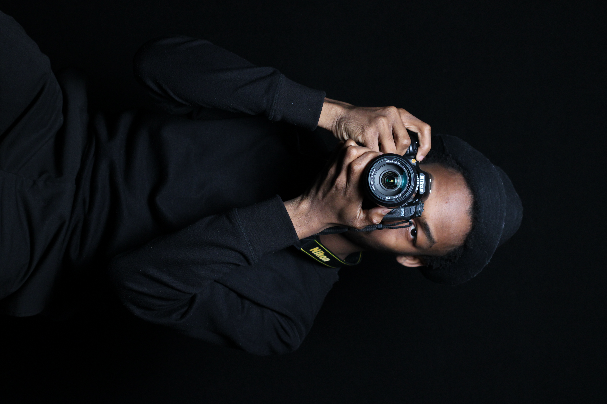

My interests
I have various hobbies. I enjoy playing video games like R.E.P.O. and Risk of Rain 2. I enjoy spending my spare time watching animes such as One piece and Frieren. I enjoy reading light novels and manhwa. I am currently reading a light novel calledShadow slave. I've joined this program in order to mix such hobbies with my work in the creative industry.
Motivational Quote
Never back down, never give up! - Nick Eh 30